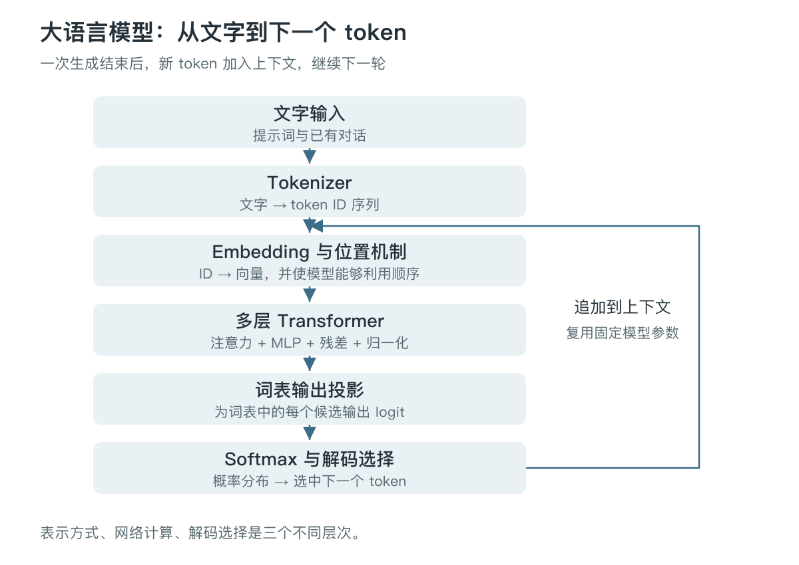
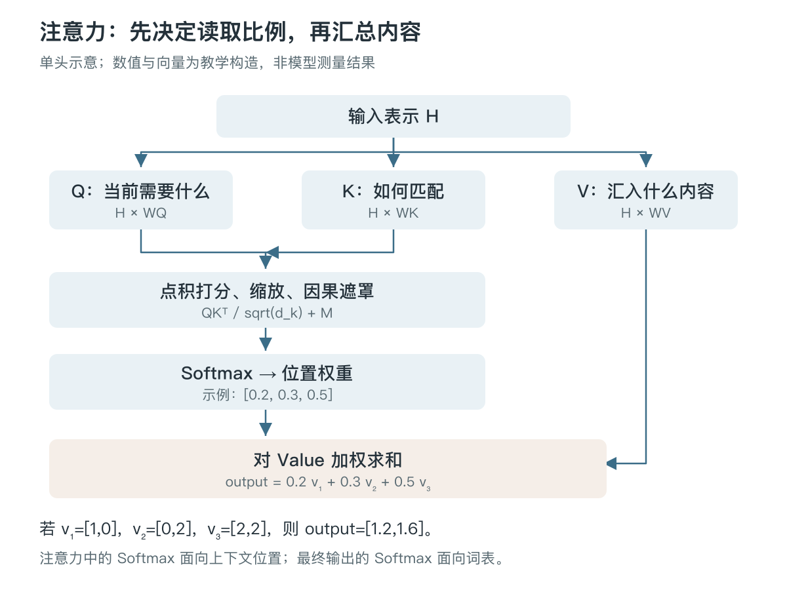
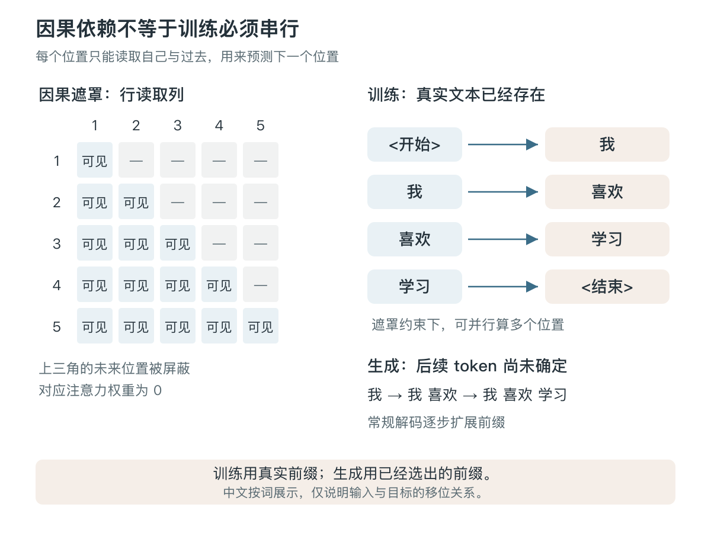
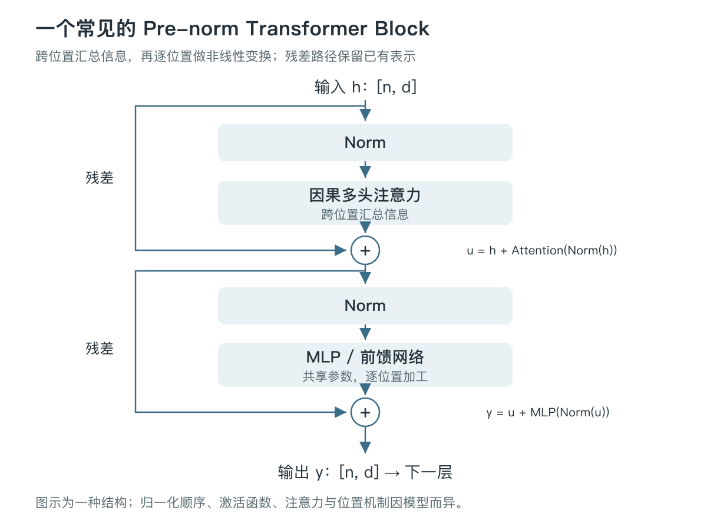

从 Token 到 Transformer：大语言模型如何训练与生成
大语言模型每天都在回答问题、写代码、总结文档。不过，从输入一句话到收到一段回答，中间究竟发生了什么？Token、Embedding、Attention、训练、推理这些词，又是怎样连在一起的？
这篇文章从一段斯坦福课堂视频出发，按初学者更容易理解的顺序，把这些概念重新组织起来。目标是建立一条能够前后贯通的理解路径：先看模型处理什么，再看它怎样计算、怎样学习，最后理解它怎样生成文字，以及为什么会慢、会占显存、会出错。
视频出处：Dobby（@lesliedqbb）在 X 分享的斯坦福课堂视频，帖子发表于 2026 年 10 月 26 日，视频约 2 小时 35 分钟。本文依据视频英文自动字幕整理，并结合 Stanford CS229 讲义与文末原始论文校对。正文调整了讲解顺序，图示、计算示例和标为“延伸”的内容为补充讲解，不是课堂逐字翻译；配图均为本文绘制。
视频前半段讲语言模型和注意力，约 1:16:47 后转入神经网络基础。阅读本文不需要跟随视频时间线；文末保留回看索引，便于找到对应片段。
1. 先看全貌：模型反复解决什么问题
先考虑最常见的自回归语言模型。它反复做一件事： 根据已经出现的内容，计算下一个 token 的概率分布，再从中选择一个 token。
这个过程不是只有“猜一个词”那么简单。为了做出有用的预测，模型需要在训练中学会利用语法、语义、事实关联、代码结构等大量模式。一个简单的训练目标，可以驱动一个很复杂的计算系统；训练目标本身也不能保证模型掌握的每个模式都正确。

可以先记住三个不同层次：
- 表示 ：怎样把文字变成数字和向量。
- 计算与学习 ：怎样利用上下文产生预测，以及怎样调整参数。
- 选择 ：拿到候选概率后，具体输出哪个 token。
Tokenizer 主要负责第一层，神经网络与训练处理第二层，解码策略负责第三层。相同模型使用不同解码策略，可能给出不同回答；改变温度并不等于重新训练模型。
下文用 n 表示序列长度，用 d 表示隐藏向量维度，用 V 表示词表。为了便于阅读，部分例子按中文词语展示， 不代表某个真实分词器的切分结果 。
2. 从文字到向量：Token 与 Embedding
2.1. 为什么不直接按完整单词处理
神经网络执行的是数值运算，不能直接把字符串当成矩阵相乘。第一步通常是分词：把文本转成有限词表中的 token 序列，再映射成整数 ID。
Token 可以是完整单词、单词片段、汉字、标点，或者包含前导空格的组合。它不是一个固定的语言学单位。
| 方案 | 好处 | 主要代价 |
|---|---|---|
| 按字符或字节 | 基本单位较少，容易覆盖输入 | 相同文字往往需要更长序列 |
| 按完整单词 | 常见词表示紧凑 | 罕见词、新词、复合词不容易覆盖 |
| 按子词 | 在词表大小与序列长度之间折中 | 切分不一定符合人的词义边界 |
例如，一个罕见长词可以拆成几个常见片段。即使模型没有充分见过完整长词，也可能利用片段及其上下文形成有用表示。这是子词方法的一项动机，但不意味着分词器本身“理解了词义”。分词器主要按规则或统计做切分，语义关系主要由后续模型学习。
2.2. 延伸：用一个完整小例子理解 BPE
BPE（Byte Pair Encoding）的一种常见训练方式是：从较小单位开始，统计相邻 token 对的频次，反复合并最高频的对，直到达到目标词表大小或其他停止条件。
假设语料只有 low low lower ，为便于说明，先按字符切分，并禁止跨词边界合并：
| 阶段 | 第一个 low | 第二个 low | lower |
|---|---|---|---|
| 初始 | l · o · w | l · o · w | l · o · w · e · r |
| 合并 l + o | lo · w | lo · w | lo · w · e · r |
| 合并 lo + w | low | low | low · e · r |
表中的 · 只用于标出 token 边界，不属于原始文本。每个单元格表示同一个词在该步骤的切分结果。
第一步中， l,o 和 o,w 都出现三次；假设按预先约定的并列规则选择前者。合并后， lo,w 成为高频相邻对，再把它合并为 low 。真实分词器还可能使用字节表示、预切分、特殊 token 等机制。
训练得到合并规则后，对新输入分词时通常按已学到的规则与优先级执行， 不是每次收到用户输入都重新统计一遍全语料频次 。子词方法的经典论文是 Neural Machine Translation of Rare Words with Subword Units。
分词器与语言模型有两种不同的“训练”：前者确定词表和切分规则，后者学习神经网络参数。常规流程先确定分词器，再训练语言模型。
2.3. Token ID 只是编号，Embedding 才是可学习的表示
假设一段文本被转换成 [17, 356, 82] 。这些数字只是查表索引。编号 356 不比编号 17“语义更大”，编号相近也不意味着含义相近。
模型维护一张 Embedding 表。假设词表有 50,000 个 token，每个 token 用 768 维向量表示，这张表的形状就是 [50000, 768] 。编号 356 的 token，读取表中对应的一行即可得到向量。向量初始值通常来自随机初始化，随后与其他模型参数一起学习。
这里有一个很重要的前后区别：同一 token 的 初始向量 通常相同，但经过 Transformer 后的 上下文表示 可以不同。“苹果发布了新产品”和“我吃了一个苹果”中的“苹果”，会受到不同周围内容影响。
也不要把向量维度理解成固定的人类标签。我们不能一般性地说“第 1 维表示水果，第 2 维表示科技公司”；有用的信息通常分布在多个维度及其组合中。
3. 神经网络的基本积木：矩阵乘法与非线性
理解注意力之前，先看普通神经网络怎样处理一个向量。最基本的变换可以写为：
a = activation(x W + b)
本文统一按行向量来理解：输入 x 的形状是 [1, d_in] ，权重 W 是 [d_in, d_out] ，偏置 b 是 [d_out] ，输出 a 是 [1, d_out] 。W 与 b 是训练中要学习的参数，激活函数逐元素作用于数值。
只看一个输入数值时，ReLU 就是一个很直观的例子：负数变成 0，正数保持原值，即 ReLU(z) = max(0, z) 。
为什么要加激活函数？如果连续堆叠的全是线性或仿射变换，它们仍然可以合成一个仿射变换。加入非线性后，网络才有能力表达更复杂的关系。GELU、SiLU 等是其他常见激活函数；选择哪一种，还涉及模型效果和实现效率。
MLP（多层感知机）就是多次组合这些运算。Transformer 中常见的一种两层前馈网络可以简写为：
MLP(x) = activation(x W1 + b1) W2 + b2
例如，把一个 768 维向量先映射到 3,072 维，经非线性处理后再投影回 768 维。中间维度较宽，可以提供更丰富的变换空间；这个比例只是示例，并非固定要求。采用 SwiGLU 等门控形式的模型，其具体计算式也会不同。
这时还没有解决跨位置的信息交流。如果对句子中每个 token 独立应用同一个 MLP，“它”对应的向量仍然无法利用前文知道它指谁。我们稍后会用注意力解决这个问题。
4. 训练怎样让参数变得有用
4.1. 从整段文本的概率，拆到每个位置的预测
假设一句话由 x₁ 到 xₙ 组成，概率链式法则允许我们这样分解：
\[ P_\theta(x_1,\ldots,x_n)=\prod_{t=1}^{n}P_\theta(x_t\mid x_{1:t-1}) \]
这里 x_{1:t-1} 的含义是位置 t 之前的所有 token，θ 表示模型参数。这组条件分布定义了模型自己的联合分布 Pθ。链式法则本身是恒等式；模型学习的是对真实数据分布的近似。
把一整段文字作为训练样本时，可以用其已有前缀作为输入，用紧接着的 token 作为目标。训练标签就在原文里，这通常称为自监督学习。
输入位置： <开始> 我 喜欢 学习 预测目标： 我 喜欢 学习 <结束>
4.2. Logits、Softmax 和交叉熵各做什么
网络不会直接输出“学习”两个字。它先为词表中的每个 token 输出一个分数，称为 logit；再通过 Softmax 转成概率。假设只有三个候选，分数是 [2, 1, -1] ，得到的概率约为 [0.705, 0.259, 0.035] 。
如果真实答案是候选 B，损失只取 B 的预测概率，计算 -ln(0.259) ，约为 1.35。给真实答案的概率越低，惩罚越大。
对于一段文本，典型的平均损失是：
\[ \mathcal{L}=-\frac{1}{n}\sum_{t=1}^{n}\log P_\theta(x_t\mid x_{1:t-1}) \]
这就是下一 token 预测中的交叉熵，也可以从最大似然估计得到。训练并不要求每个上下文只能有唯一的合理续写：很多上下文确实有多种可能，模型需要在大量样本上学习这种分布。
一个便于比较的指标是困惑度（Perplexity）：使用自然对数且按 token 平均损失时， PPL = exp(loss) 。但不同分词器的 token 粒度不同，因此跨分词器直接比较 token 级 PPL 很容易产生误导；低困惑度也不等于问答一定正确。
4.3. 反向传播、梯度下降与小批次
训练反复执行：取一批数据、前向预测、计算损失、反向传播、更新参数。
反向传播利用链式法则，计算损失对参数的导数。梯度下降再沿着让损失局部下降的方向更新参数。最简单的形式为 θ ← θ − η × gradient ，其中 η 是学习率。AdamW 等优化器会进一步处理梯度与更新尺度。
为了直观看出导数在做什么，考虑只有一个参数的玩具模型：预测 ŷ = w x ，样本是 x = 2, y = 6 ，损失 L = (w x − y)² / 2 。若初始 w = 1 ，预测为 2，损失为 8；梯度 dL/dw = (w x − y)x = -8 。学习率取 0.1，更新后 w = 1.8 ，预测变成 3.6，损失下降到 2.88。
大型网络的导数更复杂，但仍然由这些基础运算的导数按链式法则组合而成。自动微分负责系统地完成计算，并不需要手工为整个模型写一条巨大公式。
如果每次更新都遍历全部训练数据，代价太高，因此通常使用 mini-batch。随机小批次的平均梯度，是整体平均梯度的一种估计。批次太小可能噪声较大、硬件利用率不足；批次变大又会增加显存与同步开销。实际训练还要共同调整学习率和其他参数。
神经网络优化通常是非凸问题。这里不能推导出“梯度下降保证找到全局最优”，也不应把 SGD 的有效性简单归结为“噪声一定能跳出坏的局部最小值”。
5. 注意力：让一个位置利用其他位置的信息
5.1. Q、K、V 是怎样来的
以“把书交给小李，因为他需要参考”为例。处理“他”附近的位置时，模型可能需要利用“小李”等前文信息。注意力提供了一种可学习的信息汇总机制。
对于每个位置的输入向量 h，分别乘上三个权重矩阵：
Q = H WQ K = H WK V = H WV
可以暂时把 Query 理解为“当前在找什么”，Key 理解为“每个位置提供什么匹配线索”，Value 理解为“匹配后实际汇入的内容”。三者都是学习出来的向量；Q、K、V 不是人预先填好的问题、关键词和答案。

计算可以分成三步：先对 Query 与各个 Key 做点积得到分数；对分数缩放并应用遮罩，随后通过 Softmax 得到权重；最后用权重对 Value 加权求和。
5.2. 手算一次信息汇总
假设某个位置得到的注意力权重是 [0.2, 0.3, 0.5] ，三个 Value 分别为 v1 = [1, 0] 、 v2 = [0, 2] 、 v3 = [2, 2] ，则输出是：
output = 0.2 × [1, 0] + 0.3 × [0, 2] + 0.5 × [2, 2]
= [1.2, 1.6]
Value 3 的影响更大，但输出并不是把 Value 3 原样复制过来，而是一个加权混合。这个向量还会继续经过输出投影、其他模块和后续层。
标准的缩放点积注意力写为：
\[ \operatorname{Attention}(Q,K,V)=\operatorname{softmax}\left(\frac{QK^\top}{\sqrt{d_k}}+M\right)V \]
这里 dₖ 是 Query 和 Key 的维度，M 是遮罩。若分量近似独立、均值为 0、方差为 1，点积的方差会随维度增长；除以维度的平方根，有助于控制分数尺度，避免 Softmax 过度饱和。这是理解该缩放项的一个经典动机，详见 Attention Is All You Need。
注意力权重描述的是某层、某头中的信息混合比例。把一张注意力图直接当成模型完整的“思考过程”或严格的因果解释，通常超出了这张图能够证明的范围。
5.3. 因果遮罩：不能让模型偷看答案
在自回归语言模型中，位置 t 的表示用于预测位置 t+1，因此可以读取自己以及过去的位置，但不能读取未来位置。
实现时，在注意力分数矩阵的未来位置加上负无穷。经过 Softmax 后，这些位置的权重变成 0。这里说“位置 t 不能看未来”，不意味着它连当前位置的输入 token 也不能读取；真正要避免的是看到尚待预测的目标。

这也解释了一个常见疑问： 自回归描述的是概率依赖关系，不意味着训练时必须逐个位置串行计算。 训练时整段真实文本已知，可以在遮罩约束下并行计算多个位置的损失。这种使用真实前缀的训练方式通常称为 teacher forcing。
生成时，新 token 还没确定，后续前缀也尚未确定，所以常规解码需要逐步推进。投机解码等工程方法可以一次验证多个候选，但并不把基础目标改成“所有未来 token 相互独立”。
5.4. 多头注意力与两个不同的 Softmax
多头注意力使用多组不同投影并行计算注意力，再把各头的结果拼接和投影。每个头可以在不同表示空间中汇总信息。把它类比成“不同视角”很有帮助，但“某个头永远专管语法，另一个头永远专管情感”不是架构所保证的分工。
还要区分两处经常遇到的 Softmax：
| 所在位置 | 在什么候选之间分配概率或权重 |
|---|---|
| 注意力内部 | 上下文中的各个位置 |
| 模型最终输出 | 词表中的各个 token |
它们使用相同类型的数学运算，却承担不同任务。
6. 把积木组合起来：一个 Transformer Block
Attention 负责跨位置汇总信息，MLP 负责对各个位置的表示进一步加工。二者交替堆叠，再配合残差连接和归一化，就构成 Transformer 的主体。

这个图对应的简化表达为：
u = h + Attention(Norm(h)) y = u + MLP(Norm(u))
它展示的是一种 Pre-norm 组织方式。原始 Transformer 论文采用的归一化顺序不同；实际模型还可能使用不同激活、门控、注意力变体等设计。
6.1. 残差连接与归一化
残差连接 h + F(h) 让模块可以在已有表示上学习修正。它给信息和梯度提供了更直接的传播路径，有助于深层网络的优化，但不保证任意深度、任意初始化都能稳定训练。
LayerNorm 通常沿每个位置的隐藏特征维度计算均值与方差，先减均值、按标准差缩放，再配合可学习的缩放与偏移。它不是在整篇文章的 token 之间统一做归一化。
RMSNorm 则不减均值，按均方根进行缩放，并通常保留可学习的缩放参数。可以简写为：
RMSNorm(h) = gamma * h / sqrt(mean(h * h) + epsilon)
其中 * 表示逐元素乘法，epsilon 是很小的数值稳定项。不要把 RMSNorm 的分母误写成“减均值后的标准差”，也不要理解成归一化之后每个数都必须处于 0 到 1 之间。
6.2. 延伸：词序怎样进入模型
“狗咬人”和“人咬狗”具有不同含义。除 token 内容之外，模型还需要利用顺序信息。常见方法包括可学习位置向量、正弦位置编码，以及 RoPE（旋转位置编码）。
这里不能把所有做法都概括为“给 Embedding 加一个位置向量”。例如，RoPE 通常对注意力中的 Query 和 Key 应用与位置相关的旋转，使它们的匹配分数能够反映相对位置。具体位置机制与因果遮罩分别承担不同作用，也不能相互混为一谈。
从矩阵形状看，经过多层 Block 后，隐藏表示仍通常为 [n, d] 。最后再通过输出投影变成 [n, |V|] ，使每个位置都能为整个词表打分。生成时通常只需要最后一个有效位置的分数来选出下一个 token。
7. 文本怎样真正生成：自回归与解码
训练阶段调整参数；常规推理阶段通常固定参数，只根据当前上下文计算输出。对话中补充一段资料，可以改变当前上下文及答案，不意味着这段资料已经通过梯度更新写入模型权重。
生成大致分为两个阶段：
- Prefill ：处理已有提示词，建立其上下文表示，并通常建立 KV Cache。提示词的多个位置可以并行处理。
- Decode ：根据最后位置的输出概率选择新 token，追加上下文，再进行下一步。遇到结束标记、停止条件或长度上限时结束。
因此，“模型逐个生成 token”不等于“模型必须逐个读取提示词”。这是两种不同的计算阶段。
7.1. 温度改变的是概率分布
对 logits z 使用温度 τ 后，候选 i 的概率为：
\[ p_i=\frac{\exp(z_i/\tau)}{\sum_j\exp(z_j/\tau)} \]
对于正温度，候选排序不变，但概率的集中程度改变。下方固定三个候选的 logits 为 [2, 1, -1] ，下表比较不同温度下的概率分布。
| 温度 | 候选 A | 候选 B | 候选 C |
|---|---|---|---|
| 0.5 | 87.9% | 11.9% | 0.2% |
| 1.0 | 70.5% | 25.9% | 3.5% |
| 2.0 | 54.7% | 33.1% | 12.2% |
温度趋近于零时，在最高分候选唯一等条件下，概率趋向集中于它。工程接口中常把温度 0 约定为贪心解码，但公式本身不能直接除以零。即使采用贪心策略，实际服务也可能因数值实现、并列分数处理等因素而无法保证跨环境逐字复现。
另外，降低温度不能补上模型缺失的知识。它可以让选择更集中，却不保证选择的内容更真实。
7.2. Top-k 与 Top-p
Top-k 保留概率最高的 k 个候选，重新归一化后抽样。Top-p 则保留累计概率达到阈值 p 所需的最小高概率候选集合，再重新归一化后抽样。
例如分布为 [0.50, 0.30, 0.15, 0.05] ，Top-k 的 k=2 保留前两个；Top-p 的 p=0.9 则需要前三个，因为前两个累计只有 0.8。它们控制的是采样候选范围，而不是知识量。1
每步选择局部概率最高的 token，也不保证最终整段序列具有全局最高概率，更不保证它是最有用或最正确的回答。文本生成的目标和评价标准，比单步概率排序更复杂。
8. 延伸：理解性能、显存与上下文长度
8.1. 为什么长上下文计算昂贵
标准稠密注意力需要比较位置之间的两两关系。若 Q 与 K 都有 n 行，匹配分数矩阵就是 [n, n] 。注意力部分的计算量大致为 O(n²d) ；序列长度翻倍，这部分运算大致变成四倍。
这不是整个 Transformer 所有操作的完整复杂度。MLP、QKV 投影等还有自己的计算量；不同阶段、模型宽度和硬件条件下，瓶颈可能不同。也不能把整段 Prefill 的二次成本，直接当成有缓存时单步 Decode 的成本。
8.2. FlashAttention 优化了什么
朴素实现会产生很大的注意力中间矩阵，并在显存中读写。FlashAttention 通过分块与在线计算等方法，减少高带宽显存和片上存储之间的数据搬运，避免完整物化这个巨大矩阵，从而改善实际速度与内存占用。
它仍然可以计算精确的稠密注意力。 减少中间存储与显存读写，不等于把稠密注意力的算术复杂度变成线性。 线性注意力、稀疏注意力等是另外的结构或算法取舍。
8.3. KV Cache 为什么能加速，又为什么占显存
在普通因果 Transformer 中，对于相同前缀、固定模型和位置设置，历史位置不会因未来新 token 而回头改变。因此，各层过去位置的 Key 与 Value 可以缓存复用。新一步主要计算新位置的 Query、Key、Value，再用新 Query 读取历史缓存。
它缓存的是中间向量，不是“模型已经写好的下一句话”，也不是保存最终答案的知识库。
普通未压缩 KV Cache 的大小可以粗略估算为：
KV 字节数 ≈ 2 × B × L × n × Hkv × dh × s
其中，2 表示 Key 和 Value 两份；B 是批量大小，L 是层数，n 是缓存长度，Hkv 是 KV 头数，dh 是每头维度，s 是每个元素的字节数。这个估算忽略了分配、元数据等额外开销，也不适用于所有压缩或特殊缓存结构。
假设单请求、32 层、8 个 KV 头、每头 128 维、FP16，缓存 16,384 个 token：
2 × 1 × 32 × 16,384 × 8 × 128 × 2 = 2,147,483,648 字节 = 2 GiB
这还没有包括模型权重、工作缓冲区等占用。增加并发请求时，缓存也会成为重要的资源开销。Grouped-Query Attention 等设计通过减少 KV 头数，在结构上改变这一项成本；具体原理可以继续阅读 KV Cache 文档。
有缓存时，标准稠密注意力每个新 token 仍需读取相关历史 Key、Value。它避免重复算历史表示，却不意味着上下文变长后，每步计算都完全不变。
8.4. 上下文窗口与长期知识不是一回事
模型权重、当前上下文和外部存储，可以粗略理解为三种不同的信息来源：
| 信息来源 | 如何影响回答 | 是否通常在这次对话中更新模型参数 |
|---|---|---|
| 模型权重 | 提供训练中学到的模式 | 否 |
| 当前上下文 | 直接参与本次计算 | 否 |
| 检索或工具结果 | 被引入上下文后参与回答 | 通常否 |
上下文窗口的限制不仅涉及显存与计算，还涉及位置机制、训练覆盖、具体模型结构与服务设置。窗口能够容纳一段文字，也不保证模型对其中所有细节都能可靠利用。把上下文摘要压缩得更短，可以节省资源，但摘要本身可能丢失信息。
8.5. 为什么训练大模型昂贵
训练不仅要读取权重进行前向计算，还要反向传播、存储梯度和优化器状态，并处理激活值、设备通信和检查点。模型参数多、训练 token 多、序列长，都会增加不同方面的成本。
因此，在固定预算下，不能只问“模型能做多大”，还需要问“用多少高质量数据训练多久”。Chinchilla 论文系统研究了模型规模与训练数据量的预算分配。它给出的经验规律有实验设定和适用范围，不能作为所有模型、数据和部署目标下的固定配方。
9. 延伸：为什么会幻觉，怎样成为一个助手
9.1. 流畅、可信和正确是不同属性
从训练目标可以理解一部分局限：模型被优化为提高真实训练文本的预测概率，这个目标本身没有附带一个对任意输出都可靠的事实验证器。模型可能学会一种解释或引用的表达形式，却在知识不足时仍生成看似合理的细节。
这不是说模型没有学到知识，也不意味着每一次错误都能归结为同一个原因。训练数据质量、知识覆盖、上下文利用、后续训练和任务设置，都会影响实际表现。
RAG（检索增强生成）的一条思路，是把外部检索到的材料引入生成过程，帮助模型利用可更新、可追溯的信息。但检索可能找错材料，材料本身可能过时，模型也可能误读证据，所以“用了 RAG”仍然不能等同于“答案一定正确”。
9.2. 从基础模型到可用助手
视频重点解释的是语言模型与神经网络基础。完整助手通常还涉及后续训练与系统组件：
| 环节 | 主要作用 |
|---|---|
| 预训练 | 从大量数据中学习语言和各种模式 |
| 指令微调（SFT） | 学习按照指令、问答与对话示例回应 |
| 偏好或奖励驱动的训练 | 进一步调整回答行为和任务表现 |
| 检索、工具与应用层 | 获得外部信息、执行操作、管理上下文 |
这些环节不是每个模型都采用完全相同的顺序和方法。SFT 等内容可进一步对照 CS229 讲义的后续章节。
提示词之所以有效，是因为它改变了模型当前看到的条件。给出任务、边界、材料和例子，可能让模型更容易形成符合需要的续写；它无法替代缺失知识、可靠证据或适当训练。
10. 怎样把这些概念真正学会
读完后，可以试着完成几个小练习，比记住所有名词更有帮助：
- 给出
[2, 1, -1]三个 logits，手算一次 Softmax，再比较温度为 0.5 和 2 时的结果。 - 给出一个包含四个位置的序列，画出因果遮罩，并标明每个位置预测哪个目标。
- 用
[0.2, 0.3, 0.5]的权重和三个二维 Value，重新算一次注意力输出。 - 给出 Q、K、V 的矩阵形状，检查为什么 Q 与 K 的转置相乘，会得到一个位置对位置的矩阵。
- 用 KV Cache 的估算式，计算上下文翻倍、并发翻倍、KV 头数减半分别怎样影响内存。
如果还不能从文字输入一路解释到下一个 token，可以回到第一张流程图，逐个说明每个箭头上的数据是什么形状、哪些量是参数、哪些量是本次输入计算得到的。能把这条链路讲顺，后续学习模型实现、推理优化和分布式训练会容易许多。
11. 视频出处与回看索引
原帖：Dobby（@lesliedqbb）分享的视频。下列时间均为帖子内视频的位置，部分边界取近似值。
| 视频位置 | 内容 |
|---|---|
| 00:00—约 09:50 | Token、子词、BPE |
| 约 09:50—25:44 | 概率链式分解、Embedding、Softmax |
| 25:44—35:40 | 自回归生成、温度、Top-k |
| 35:40—约 38:30 | 最大似然与语言模型损失 |
| 约 38:30—1:16:47 | 注意力、遮罩、多头、残差归一化及效率 |
| 1:16:47—约 1:50 | 非线性模型、分类损失、梯度下降与 SGD |
| 约 1:50—2:20 | 神经元、MLP、激活函数和矩阵表示 |
| 约 2:20—结尾 | 残差连接、LayerNorm、RMSNorm，简述卷积 |
相关官方课堂可对照 Stanford Online 发布的 CS229 Lecture 14: Transformers, In-Context Learning 与 Lecture 7: Neural Networks 1 (Architecture)。它们是相关课程来源入口，本文时间索引以 X 内嵌视频为准。
12. 参考资料
- Stanford CS229 Lecture Notes：神经网络、语言模型、训练目标及后续训练的课程讲义。
- Neural Machine Translation of Rare Words with Subword Units：子词分词与 BPE 的经典论文。
- Attention Is All You Need：缩放点积注意力、多头注意力和原始 Transformer 架构。
- Root Mean Square Layer Normalization：RMSNorm。
- RoFormer: Enhanced Transformer with Rotary Position Embedding：RoPE。
- FlashAttention：通过 IO 优化计算精确注意力。
- Hugging Face: How caching works：KV Cache 的机制与使用。
- Training Compute-Optimal Large Language Models：训练预算下模型规模与数据量的分配。
- Retrieval-Augmented Generation for Knowledge-Intensive NLP Tasks：检索增强生成。
脚注:
Hugging Face: Generation strategies，包含贪心解码、采样等策略的说明。本文示例说明数学行为，不对应某个产品的默认参数。